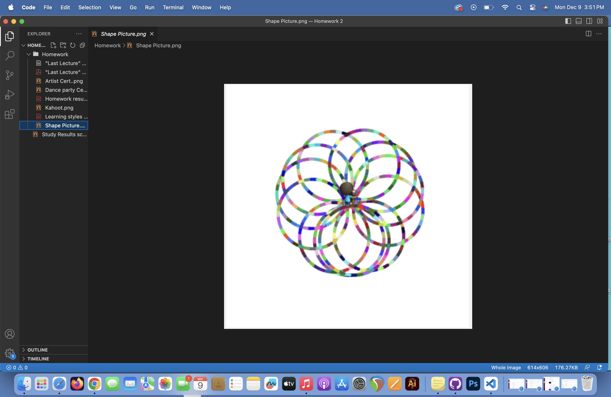
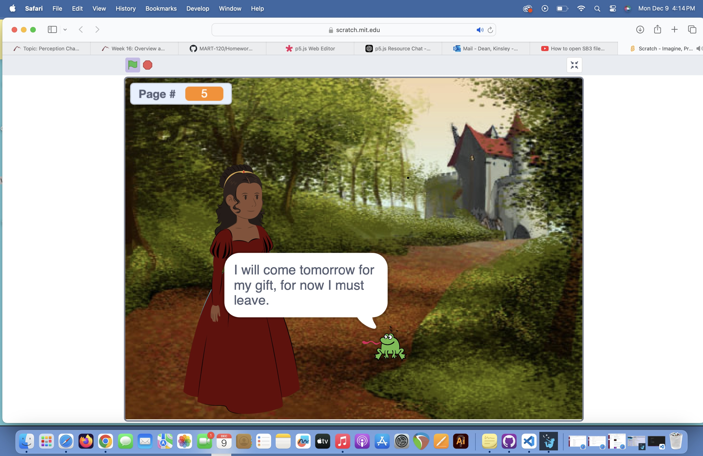
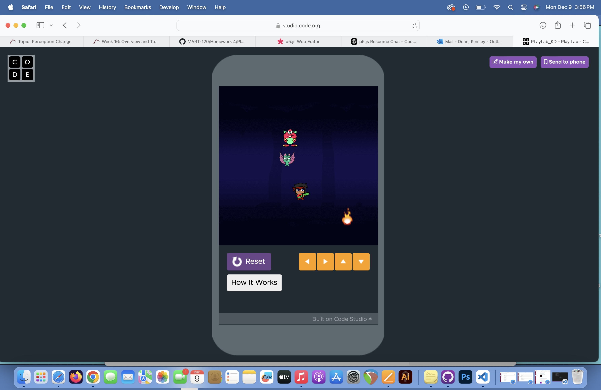
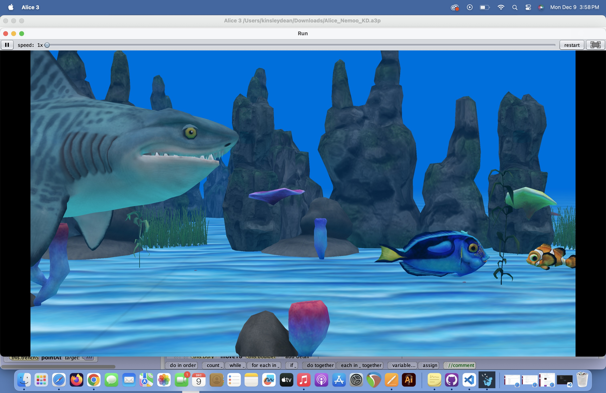
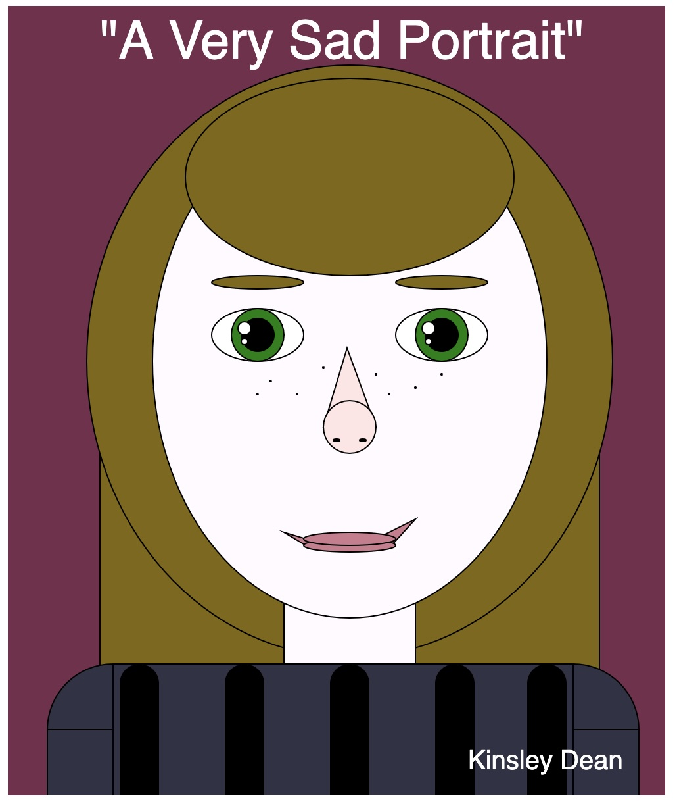
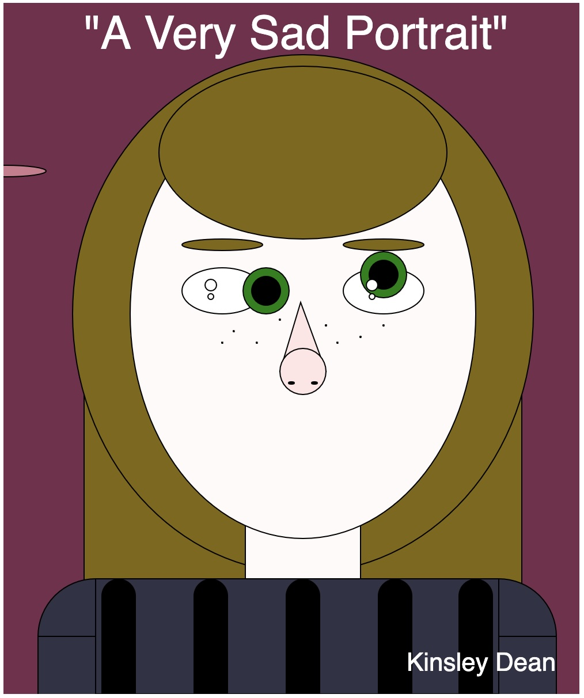
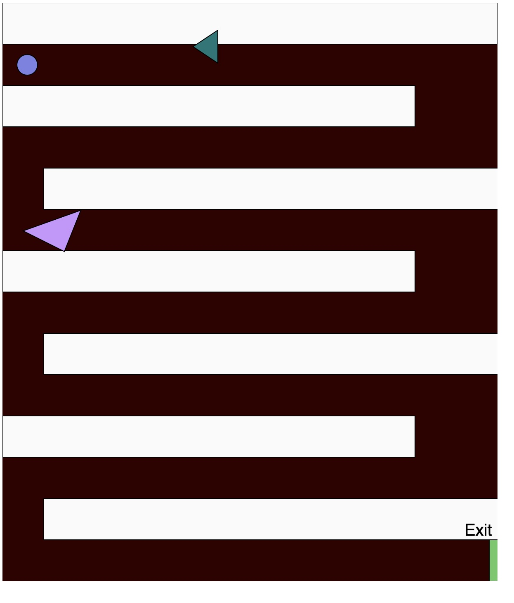
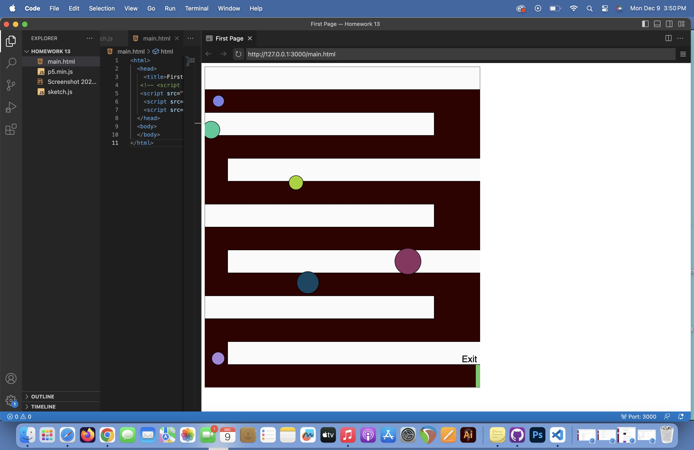

For our first assignemnt, we went over the basics of coding. In doing so, I created my own unique picture of spiraling circles.
For our second coding assignment, we had to creat a short game, or story with the Scratch coding website. I made a short story with the Princess the Frog storyline.
For our third assignment, we were to create a short game that could be played with the CODE website. My game was an avoidance game. If the characters touched you, you lost.
For our fourth assignemnt, we used the Alice coding program. With this, I created a funny gag video of a call to the Nemo movie.
For our fifth assignment, we began to work with p5.js program. I made a portrait of mysef using the tools to create shapes.
For our sixth assignment, we continued to work with p5.js program. I made certain shapes within my portrait to start moving around the screen.
For our seventh assignment, we continued to work with p5.js program. We were instructed to create a game. I made my another avoidance game with your character, and added a maze to give the player a bigger challenge. The trainagles moved around the board and bounced back on the edges.
For our eigth assignment, we continued to work with p5.js program. We developed our coding within the game to become simpler. I also added more enemies that chnaged colors and moved around the screen.
